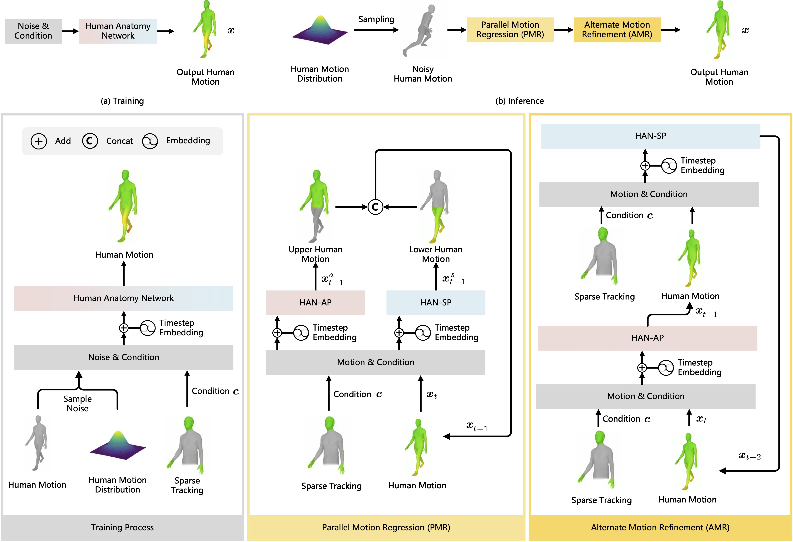
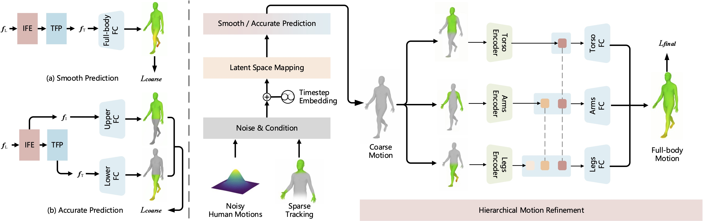
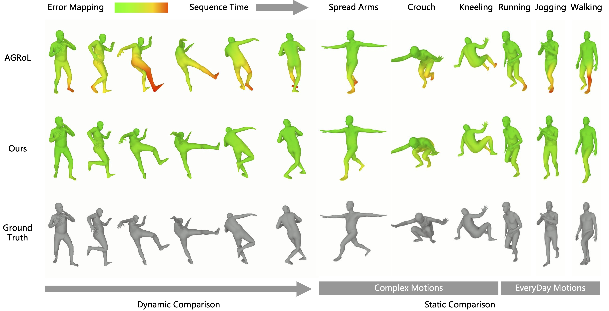

In the research field of analysis of people, generating precise full-body human motion from sparse tracking is a significant challenge. It is well known that diffusion techniques excel in generating high-quality two-dimensional (2D) visual content. However, when applied to human motion reconstruction, they might struggle to capture the inherent complexities of human motion, which is characterized by three-dimensional (3D) anatomical features and one-dimensional (1D) temporal dynamics. This heterogeneous structure between human motion and images can lead to accumulated errors at the joints, affecting the accuracy and smoothness of the generated motions. Building on this insight, we propose Human Anatomy Diffusion (HAD), a novel framework that integrates human anatomical features into the denoising process and excels in handling complex motions, accurately capturing body angles and balance, and showing enhanced alignment in motion prediction. HAD remarkably advanced the performance of motion reconstruction, notably enhancing smoothness by 81.29% compared to the previous state-of-the-art works and improving key accuracy metrics like MPJPE, Root PE, and Lower PE by approximately 20% on AMASS. Our method provides a crucial advancement for creating realistic and responsive virtual avatars in real-world applications.
We propose Human Anatomy Diffusion (HAD), a novel framework that integrates human anatomical features into the denoising process for motion reconstruction from sparse tracking. HAD consists of two key components: the Human Anatomy Network (HAN) and the Human Anatomy Diffusion process.
The Human Anatomy Network (HAN) is structured into four modules: Latent Space Mapping (LSM), Iterative Feature Enhancement (IFE), Temporal Feature Pyramid (TFP), and Hierarchical Motion Refinement (HMR).
The Human Anatomy Diffusion process is divided into two phases: Parallel Motion Regression (PMR) and Alternate Motion Refinement (AMR).
Our method significantly outperforms the state-of-the-art approaches on the AMASS dataset, as shown in the quantitative results below:
| Method | MPJRE ↓ | MPJPE ↓ | MPJVE ↓ | Hand PE ↓ | Upper PE ↓ | Lower PE ↓ | Root PE ↓ | Jitter ↓ | Upper Jitter ↓ | Lower Jitter ↓ |
|---|---|---|---|---|---|---|---|---|---|---|
| LoBSTr | 10.69 | 9.02 | 44.97 | - | - | - | - | - | - | - |
| CoolMoves | 5.20 | 7.83 | 100.54 | - | - | - | - | - | - | - |
| VAE-HMD | 4.11 | 6.83 | 37.99 | - | - | - | - | - | - | - |
| AvatarPoser | 3.08 | 4.18 | 27.70 | 2.12 | 1.81 | 7.59 | 3.34 | 14.49 | 7.36 | 24.81 |
| DAP | 2.69 | 3.68 | 24.03 | - | - | - | - | - | - | - |
| AGRoL-MLP | 2.69 | 3.93 | 22.85 | 2.62 | 1.89 | 6.88 | 3.35 | 13.01 | 9.13 | 18.61 |
| AGRoL | 2.66 | 3.71 | 18.59 | 1.31 | 1.55 | 6.84 | 3.36 | 7.26 | 5.88 | 9.27 |
| HAN-SP (Ours) | 2.41 | 3.31 | 16.59 | 1.75 | 1.50 | 5.91 | 2.87 | 4.69 | 3.93 | 5.78 |
| HAN-AP (Ours) | 2.40 | 3.18 | 16.42 | 1.15 | 1.37 | 5.79 | 2.90 | 7.35 | 5.66 | 9.79 |
| HAD (Ours) | 2.29 | 3.03 | 15.45 | 1.15 | 1.30 | 5.52 | 2.71 | 4.61 | 3.86 | 5.70 |
HAD achieves remarkable improvements in accuracy and smoothness metrics compared to previous methods. It reduces MPJRE by 14.29%, MPJPE by 18.87%, and MPJVE by 16.46%. Additionally, it improves the motion accuracy of the hands, upper body, and lower body by 8.4%, 15.48%, and 19.88%, respectively. The overall jitter is reduced by 81.29% compared to the previous state-of-the-art.
The qualitative results demonstrate HAD's ability to generate accurate and natural human motions from sparse tracking inputs, even for complex and dynamic actions.
@article{niu2024motionreconstruction,
author = {Niu, Zehai and Lu, Ke and Dong, Kun and Xue, Jian and Qin, Xiaoyu and Wang, Jinbao},
title = {Motion Reconstruction via Human Anatomy Diffusion from Sparse Tracking},
journal = {ECCV Workshop},
year = {2024},
}